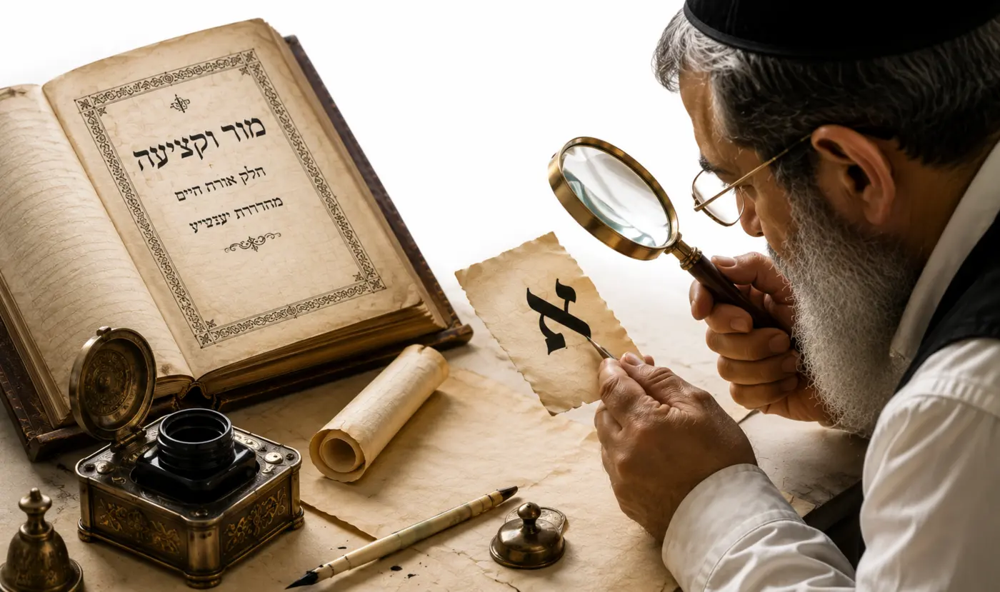

מבחן מור וקציעה

במאמר הקודם עמדנו על כך שהיעב״ץ בספרו מור וקציעה לא הציג שיטת כתב שלמה, אלא תיאר פרטים שמצא בכתב הספרדי.
ממילא, אם מבקשים לקרוא לכתב מסוים כיום „כתב מור וקציעה”, המבחן פשוט למדי: האם אותם פרטים אכן נמצאים בו?
הפרטים שכתב היעב״ץ
אל״ף – הנקודה העליונה אינה יו״ד ממש. הירך יוצאת קרוב לצד ימין, אך לא בסופה, וגגה עובר מעט גם לאחוריה.
בי״ת – עגולה מעט מבחוץ כעין רי״ש, והמושב עובר כעובי קולמוס לצד ימין.
וא״ו – ראשה משופע מעט וקוץ עליה. הראש אינו מרובע אלא עקום מעט באלכסון כלפי מעלה, והירך יוצאת מהגג קרוב יותר לצד ימין.
חי״ת – אינה עשויה כשני זייני״ן. גגה רחב, הירך הימנית כעין רי״ש, ויש שעושים אותה כדלי״ת. רגלה השמאלית קו ישר, עב מעט, וראשה דק במקום החיבור.
יו״ד – ראשה אינו ישר, אלא מחציו ואילך מתעקם כלפי מעלה. היעב״ץ קובע כלל חשוב: ראשי האותיות הדומים ליו״ד – באל״ף, זיי״ן, טי״ת, למ״ד, עי״ן, צד״י ושי״ן – דומים לה גם בפרט זה. רגליהם יוצאות סמוך לקצה הימני ולא מן האמצע, מלבד הראש השמאלי של הצד״י.
למ״ד – רגלה משתפעת שמאלה, ובסוף דקותה מתעקמת מעט לאחור, לימין, ומתעבה מעט.
מ״ם – גגה עגול בדמות הראש הימני של הטי״ת, אלא שאינו כפוף כל כך לפנים.
סמ״ך – למטה אינה עגולה, אלא מושבה קצר ובזווית.
פ״א – לנקודה שבתוכה עוקץ בשמאל למטה, לצד חוץ.
צד״י – ראשה הימני כראש האל״ף עם ירכו. בצורת חלקה הימני הביא היעב״ץ שתי אפשרויות, ונראה יותר מדבריו שהיא כנו״ן ויו״ד.
שי״ן – הגוף נמשך מן הראש הראשון סמוך לסופו, וכן הראש השני.
ביעב״ץ יש עוד אריכות
קיצרתי כאן בדבריו והבאתי את הפרטים המשמעותיים למעשה; הרוצה להרחיב יעיין בדברי היעב״ץ במקור.
אז מהו כתב מור וקציעה?
את האל״ף והלמ״ד אכן נוהגים כיום רבים לעשות כך. אבל מי שרוצה לקרוא לכתבו „מור וקציעה”, לכאורה צריך לעמוד במכלול השינויים שתיאר היעב״ץ.
האם יש מי שכותב כך היום?
אציין דבר מעניין: בכל שנות עיסוקי בתחום הסת״ם כסופר וכמגיה, לא ראיתי עד היום כתב ספרדי שבו מופיעים כל הפרטים שתיאר היעב״ץ אחד לאחד [למעט סופר אחד]. חלק מן הפרטים מוכרים היטב, אחרים מופיעים בצורות שונות – אך את המכלול כולו יחד טרם פגשתי.
ואדרבה, אם אחד הקוראים ראה כתב ספרדי קדום שבו מופיעים כל שינויי היעב״ץ, אחד לאחד, אשמח מאוד אם יידע אותי וישלח לי תמונה.
מבחן מור וקציעה
וגם אם נמצא כתב כזה, מסתבר ששאר צורתו צריכה להיות ספרדית כפי שהייתה בתקופת היעב״ץ – ולא כתב אשכנזי, ואף לא פונט מודרני שנבנה בדורות האחרונים.
לכן, כשמציגים לפניכם כתב בשם „מור וקציעה”, יש מבחן פשוט: פתחו את המור וקציעה ובדקו את האותיות.
יוחאי אוחיון – ראש מכון אמנות הסת״ם
מומחה בהוראת הכתב הספרדי